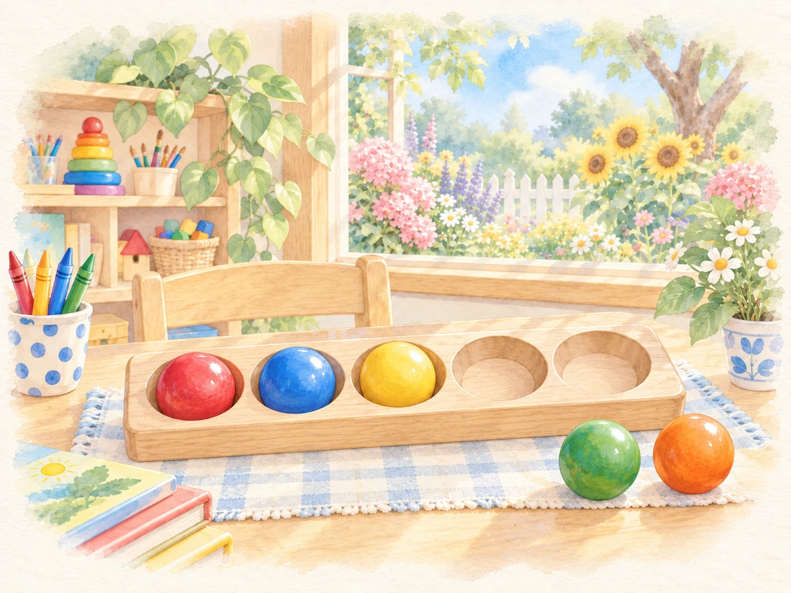

Ways to use it
- Build and check a quantity.
How to play
- Choose a counting limit, question count and marker setting.
- Read the target number.
- Tap to add objects; tap an object on the mat to remove it.
- Choose Check when the group is ready.
Practical details
Teacher setup offers counting limits of 5, 10 or 20 and optional counting markers.
Explore together
Invite children to explain what they notice and talk through their choices.